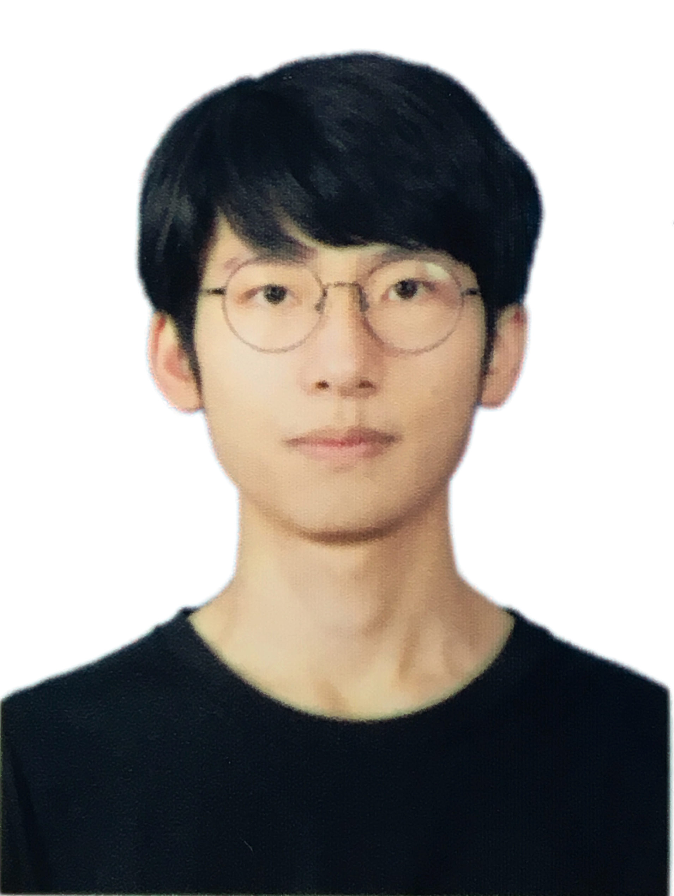

|

|
Yudong Luo
Computer Science
University of Waterloo & Vector Institute
E-mail: yudong [dot] luo [at] uwaterloo [dot] ca
[Google Scholar]
|
About
My research interests lie at the intersection of reinforcement learning, machine learning, and multi-agent system.
Publication
* equal contribution, † corresponding
Work in progress
-
Benchmarking Large Neighborhood Search for Multi-Agent Path Finding
Jiaqi Tan*, Yudong Luo*, Jiaoyang Li, Hang Ma
[arXiv]
[Code]
2024
-
A Simple Mixture Policy Parameterization for Improving Sample Efficiency of CVaR Optimization
Yudong Luo, Yangchen Pan, Han Wang, Philip Torr, Pascal Poupart
Reinforcement Learning Conference (RLC), 2024
[PDF]
[Code]
-
Risk, Reward, and Reinforcement Learning in Hockey Analytics
Sheng Xu, Oliver Schulte, Yudong Luo, Pascal Poupart, Guiliang Liu
Book chapter of Artificial Intelligence and Machine Learning in Sports Science
[PDF]
2023
-
An Alternative to Variance: Gini Deviation for Risk-averse Policy Gradient
Yudong Luo, Guiliang Liu, Pascal Poupart, Yangchen Pan
Conference on Neural Information Processing Systems (NeurIPS), 2023
[PDF]
[Slides]
[Code in supplementary]
-
Benchmarking Constraint Inference in Inverse Reinforcement Learning
Guiliang Liu, Yudong Luo, Ashish Gaurav, Kasra Rezaee, Pascal Poupart
International Conference on Learning Representations (ICLR), 2023
[PDF]
[Code]
2022
-
Uncertainty-Aware Reinforcement Learning for Risk-Sensitive Player Evaluation in Sports Game
Guiliang Liu, Yudong Luo, Oliver Schulte, Pascal Poupart
Conference on Neural Information Processing Systems (NeurIPS), 2022
[PDF]
[Slides]
-
Distributional Reinforcement Learning with Monotonic Splines
Yudong Luo, Guiliang Liu, Haonan Duan, Oliver Schulte, Pascal Poupart
International Conference on Learning Representations (ICLR), 2022
[PDF]
[Poster]
[Code in supplementary]
-
Learning Selective Communication for Multi-Agent Path Finding
Ziyuan Ma*, Yudong Luo* †, Jia Pan
IEEE Robotics and Automation Letters (RA-L), and ICRA, 2022
[arXiv]
[Code]
[Demo]
[Video]
2021
-
Leveraging Approximate Constraints for Localized Data Error Detection
Mohan Zhang, Oliver Schulte, Yudong Luo
Intl Workshop on Exploiting Artificial Intelligence Techniques for Data Management (aiDM@SIGMOD), 2021
[PDF]
-
Distributed Heuristic Multi-Agent Path Finding with Communication
Ziyuan Ma*, Yudong Luo*, Hang Ma
IEEE International Conference on Robotics and Automation (ICRA), 2021
[PDF]
[Code]
[Demo]
[Slides]
2020
-
Inverse Reinforcement Learning for Team Sports: Valuing Actions and Players
Yudong Luo, Oliver Schulte, Pascal Poupart
International Joint Conference on Artificial Intelligence (IJCAI), 2020
[PDF]
[Slides]
[Poster]
[Code]
[Video]
-
Valuing Sports Actions and Players with Inverse Reinforcement Learning
Yudong Luo and Oliver Schulte
AAAI workshop, Artificial Intelligence in Team Sports (AITS@AAAI), 2020 (spotlight)
[PDF]
[Slides]
-
Deep soccer analytics: Learning an action-value function for evaluating soccer players
Guiliang Liu, Yudong Luo †, Oliver Schulte, Tarak Kharrat
Data Mining and Knowledge Discovery (DMKD), 2020 (ECML Journal Track)
[PDF]
[Slides]
2017
-
EEG-based Emotion Recognition using Domain Adaptation Network
Yi-Ming Jin, Yu-Dong Luo, Wei-Long Zheng, Bao-Liang Lu
International Conference on Orange Technologies (ICOT), 2017 (invited paper)
[PDF]
[Slides]
Education
-
PhD. Computer Science, University of Waterloo, Waterloo, Canada, 2020 - 2024
→ with Professor Pascal Poupart
Thesis: Policy Learning under Uncertainty and Risk [PDF]
-
MSc. Computing Science (Thesis-based), Simon Fraser University, Vancouver area, Canada, 2018 - 2020
→ with Professor Oliver Schulte, also work with Professor Hang Ma
Thesis: Inverse Reinforcement Learning for Team Sports [PDF]
-
BEng. Computer Science, Shanghai Jiao Tong University, Shanghai, China, 2014 - 2018
→ work with Professor Bao-Liang Lu
Experience
- University of Waterloo, Waterloo, Canada. Visiting Researcher. Oct. 2024 - Dec. 2024
- Noah's Ark Laboratory, Toronto, Canada. Intern. Jul. 2022 - Dec. 2022
- SportLogiq, Vancouver area, Canada. Mitacs Accelerate Program Intern. Mar. 2020 - Jun. 2020
- National University of Singapore, School of Computing. Visiting Researcher. Jul. 2017 - Sep. 2017
Talk
- An Alternative to Variance: Gini Deviation for Risk-averse Policy Gradient, Vector Institute, Nov. 2023 (online), [Slides]
- Mean-Variance Reinforcement Learning, UWaterloo, Dept. of Actuarial Science, Mar. 2023, [Slides]
- Risk-Sensitive Player Evaluation in Sports Game, ETHz, Jan. 2023 (online), [Slides]
- Multi-Agent Path Finding with Deep RL and Communication, USC, Nov. 2022 (online), [Slides]
Service
- Reviewer: AAMAS 2022; ICRA 2022, 2024, 2025; NeurIPS 2022 - 2024; ICLR 2024, 2025; ICML 2024; RLC 2024
Miscellaneous
Acknowledgement
My research has been supported by
- the Vector Institute Research (21-24)
- Ontario Graduate Scholarship, by Ontario province (23)
- President’s Graduate Scholarship, by UWaterloo (23)
- David R. Cheriton Graduate Scholarship, by School of CS (23, 24)
- Waterloo AI Institute Graduate Scholarship, by Waterloo.AI [Link] (24)
| © YD | Last update: Oct 2024 |